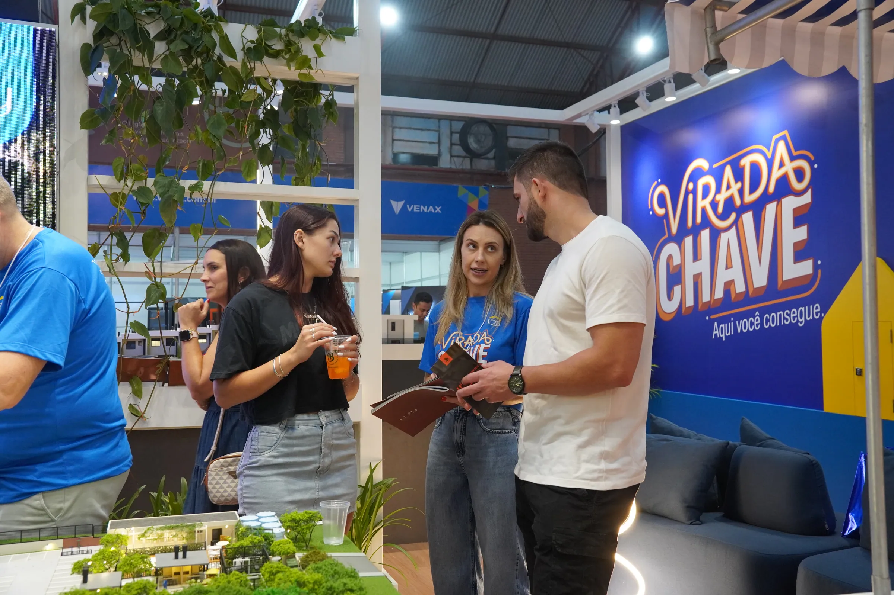
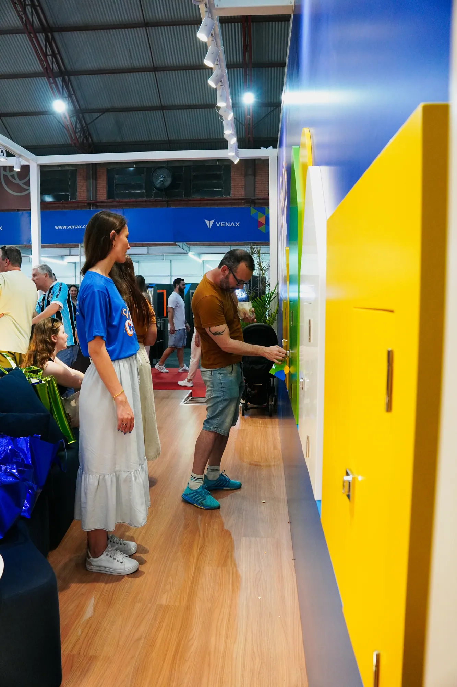
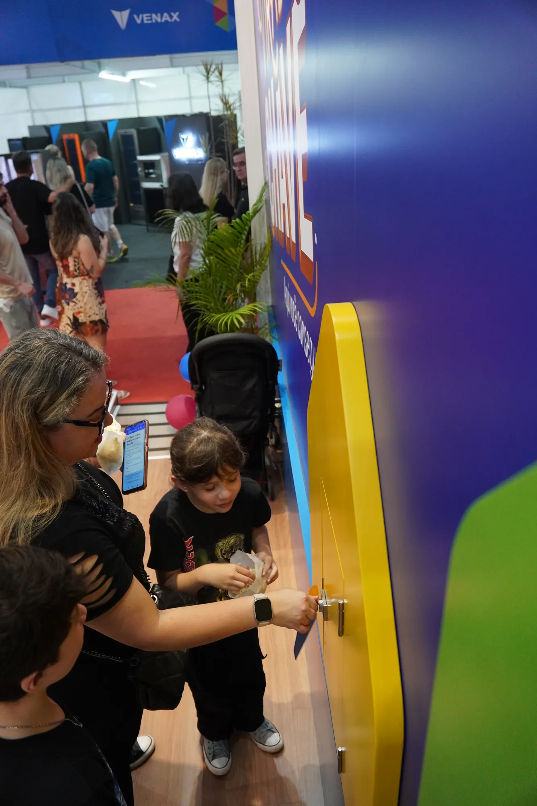
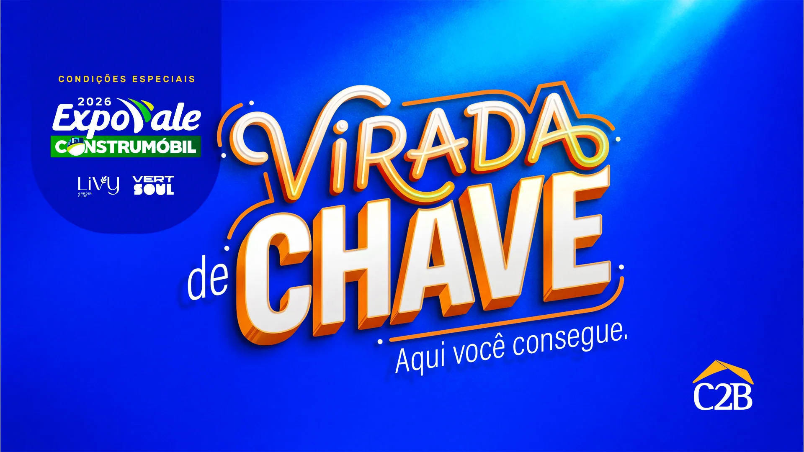
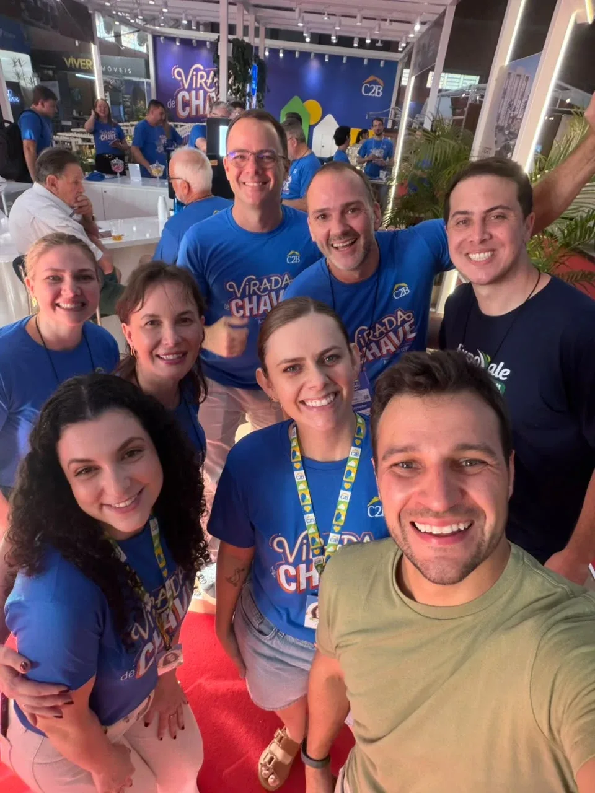
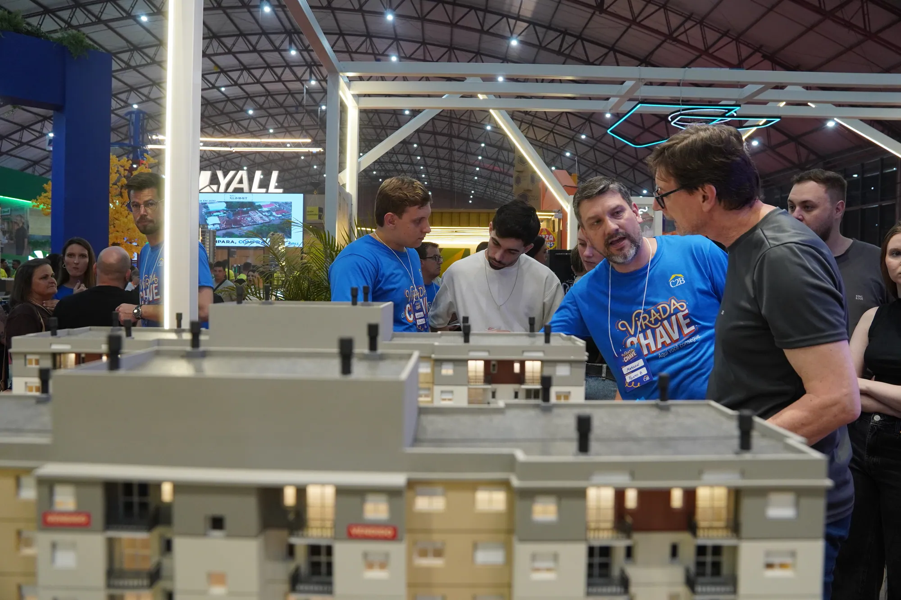

Virada de Chave.

Na Expovale 2026, a C2B não queria só mostrar apartamentos. Queria provar que a casa própria está ao alcance. A campanha virou experiência: quatro portas, três tentativas e uma chave na mão de cada visitante.
O desafio
Transformar condições especiais de compra em algo que o público sentisse na pele, no meio de uma feira cheia de estandes disputando atenção.
A ideia
Virada de Chave, aqui você consegue. Um tabelão de unidades selecionadas em cinco empreendimentos, com entrada facilitada, e um jogo no estande: quem abria a porta certa ganhava um brinde.
O que entregamos
Conceito, KV, parede do estande, adesivos das portas, painéis dos empreendimentos, flyer, regulamento, leque, crachá, camisetas, convites, carrossel comercial, vídeos para TV e LED, spot de rádio e Reels.



Animações para o estande
Conteúdo para as TVs dos empreendimentos e para a tela do comercial, além dos vídeos para as redes.


Uma feira inteira dizendo a mesma coisa: aqui você consegue.